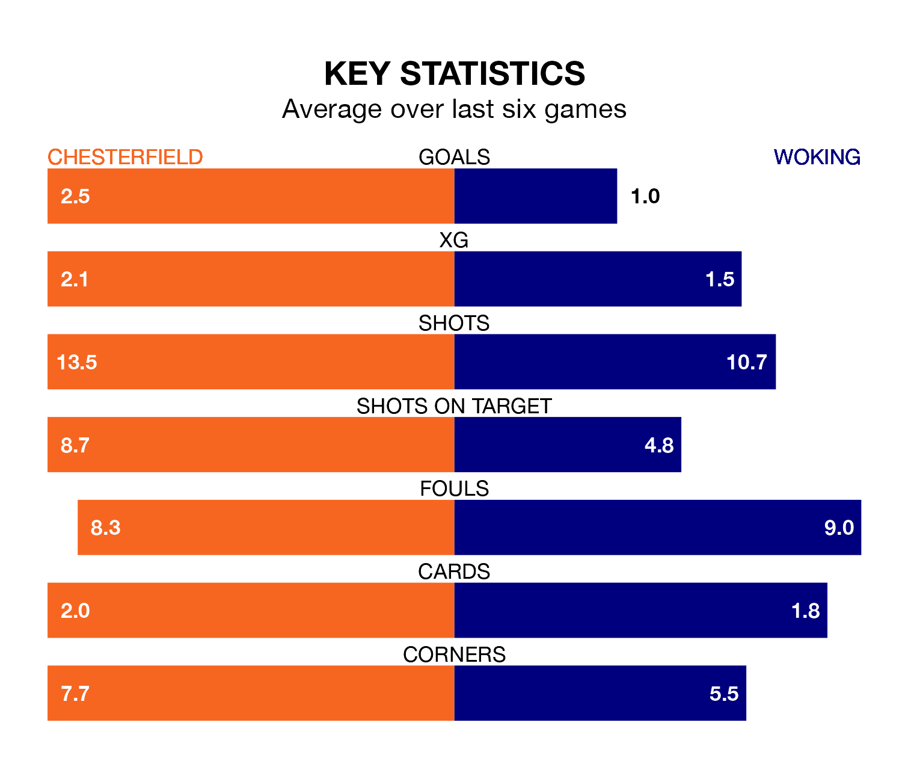

Chesterfield are heavy favourites to keep all three points at home in Tuesday's late kick-off against Woking.
The Spireites, who sit top of National League with 27 games played, are priced at 1.3 to seal victory at the SMH Group Stadium.
Sitting 19 places and 41 points behind them in the table, Woking are 8.1 to win with *Betting Company*, while the draw is at 5.0.
With 68 goals in 27 games so far this season, Chesterfield are the league's highest scorers with 2.5 goals per game. And they are conceding fewer than average, letting in 34 goals at a rate of 1.3 per game.
Woking, meanwhile, are below average scorers, with 1.0 goal per game, compared to a league average of 1.5. They have conceded 1.4 goals per game.
In the last 10 years, Chesterfield and Woking have played each other on eight occasions. Chesterfield won four of them, Woking three, and they drew once.
On average, the Spireites scored 1.8 goals and the Cardinals 1.1 in those matches.
Their last meeting was on November 21, when Chesterfield won 2-0 away.
The Spireites are in fantastic form in National League, with five wins and one loss from their last six games.
With a win and two draws over that period, the Cardinals's form is much worse – they have taken five points from 18, compared to the home team's 15.
Chesterfield's last match was on January 16, a 2-1 win against Altrincham, with James Berry-McNally and Oliver Banks getting the goals for the Spireites.
Woking lost 3-0 against Solihull Moors last time out, on January 6.
Updated: 09:18 (UTC), 23/01/24